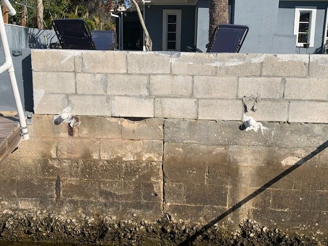
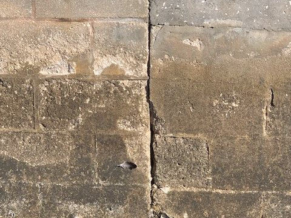
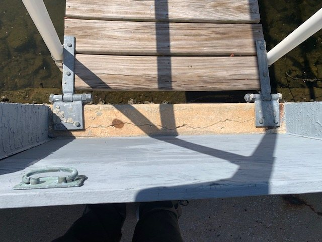

Why an independent report matters here
A seawall or bulkhead is usually the most expensive single structure on a waterfront property, and the one a buyer is least equipped to judge. When the estimate comes from the contractor who would do the work, the incentive runs one direction.
The Maryland Insurance Administration notes that piers, docks and bulkheads are typically not covered by standard homeowners policies, and the National Flood Insurance Program excludes them. Specialty carriers want a condition report before they will write the coverage. That is what this is.
Five years on the Florida coast, working with a major seawall contractor
He inspected their work under contract, and later moved onto the estimating side. He learned where seawalls fail from the people who build them. He does not build them, and that is exactly why his report is worth having.

Seawalls & bulkheads
Tie-backs, cap condition, sheeting, scour, drainage and evidence of movement — documented for you or your carrier.
Boat lifts, docks & floating docks
Pilings, cradles, cables, motors, decking and structural connections. Pre-purchase or annual condition.
Waterfront home inspections
The house and the water side, in one visit and one report, rather than two trades and two schedules.
The things that decide whether a wall has ten years left or two
Seawalls and bulkheads
A wall fails from behind and below long before it fails at the face. Most of what matters is not visible from the deck.
- Tie-back anchors and their plates, including corrosion staining at the face
- Cap condition, cracking, separation and movement between sections
- Sheeting, joints and any loss of backfill through them
- Scour at the toe, and evidence of undermining
- Drainage and weep behaviour behind the wall
- Alignment, lean and any sign the structure has moved
Boat lifts, docks and floating docks
A lift is a machine holding a boat over water. It gets inspected like a machine.
- Pilings, wraps and connections at the waterline and below
- Cradles, bunks, cables, sheaves and their wear
- Motors, switches and electrical condition at the dock
- Decking, framing, fasteners and structural connections
- Gangways, hinges and the transition to the fixed structure
- Flotation, freeboard and anchoring on floating docks
The waterfront home inspection
The house and the water side in one visit and one report, rather than two trades and two schedules.
- Everything in a complete home inspection, plus the marine structures
- One report, one invoice, one person to call with questions
- Written so a specialty carrier or a lender can use it
What failure actually looks like
Photographs from real inspections. None of these were obvious to the owner before someone pointed at them.

A crack that runs through courses is the wall moving, not the surface weathering.

Cap slabs pulling apart. The gap is where the backfill starts leaving.

Under the gangway hinge, where nobody looks and the load concentrates.
Call and you get me, not a call center
Eight in the morning to eight at night, seven days a week. Tell me about the property and I will tell you straight what is involved.
410-794-6092 Coastal Inspections · Maryland & Delaware